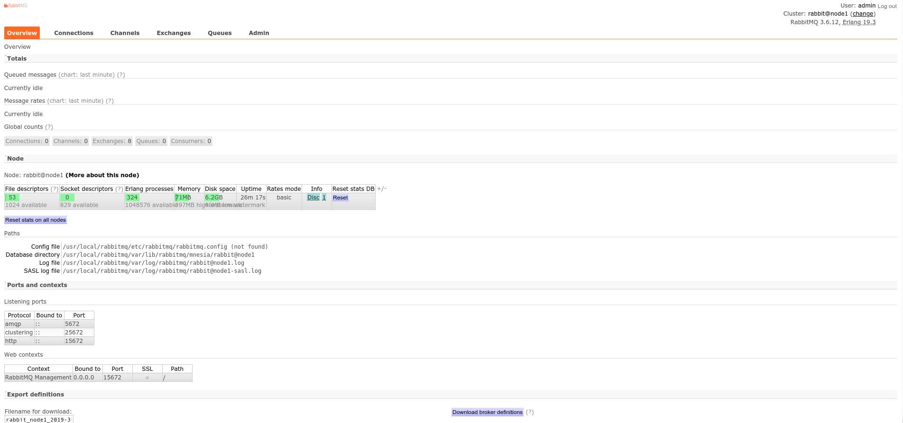

Rabbitmq
一、基础知识¶
1. 消息中间件¶
1. 消息与消息队列中间件¶
消息：消息是指应用间传送的数据，可以是字符串，JSON，内嵌对象等
消息中间件：是指利用高效可靠额消息传递机制进行与平台无关的数据交流，并基于数据通信来进行分布式系统集成。
2. 消息传递模式¶
- 点对点：消息生产者生产消息发送到queue中，然后消息消费者从queue中取出并且消费消息
- 发布/订阅：使用topic作为通信载体
3.主流产品¶
Rabbitmq、Kafka、ActiveMQ、RocketMQ
4. 消息中间件的作用¶
- 解耦
- 冗余（存储）：把数据持久化直到数据被处理完
- 扩展性
- 削峰：使关键组件支撑突发访问压力
- 可恢复性
- 顺序保证：保证数据处理的顺序
- 缓冲
- 异步通信
2. Rabbitmq¶
1. 官网¶
http://www.rabbitmq.com/
2. 特点¶
- 可靠性： 持久化、传输确认、发布确认
- 灵活的路由
- 扩展性：集群
- 高可用性： 集群镜像
- 多种协议：AMQP、STOMP、MQTT
- 多语言客户端：Python、Java、Ruby、PHP、C#、JavaScript、Go、Elixir、Objective-C、Swift、Spring AMQP
- 管理界面
- 插件机制
3. 概念¶
1. Producer¶
生产者，投递消息的一方，消息的组成：
- 消息体：带有业务逻辑结构的数据（如JSON）
- 标签：交换器名称或路由键
2. Consumer¶
消费者，接收消息的一方，消费一条消息时只消费消息体，消息的标签在路由的过程中会丢弃
3. Broker¶
消息中间件的服务节点，可以简单的看作一个Rabbitmq服务节点或者Rabbitmq服务实例
4. Queue¶
队列，Rabbitmq的内部对象，用来存储消息。
多个消费者可以订阅同一个队列，队列中的消息会轮询给多个消费者进行处理。
5. Exchange¶
交换器，生产者将消息发送到交换器，由交换器将消息路由到一个或多个队列中。
交换器类型：
-
fanout： 把所有发送到该交换器的消息路由到所有与该交换器绑定的队列中
-
direct： 把消息路由到BindingKey和RoutingKey完全匹配的队列中
-
topic：把消息路由到BindingKey和RoutingKey匹配（可以模糊匹配）的队列中
1 2 3 4 5 6 7 | |
- headers: 根据消息内容中header（键值对形式）属性进行匹配 性能较差，而且不实用
6.RoutingKey¶
路由键，生产者将消息发给交换器的时候，一般会指定一个RoutingKey，用来指定这个消息的路由规则，；路由键需要与 交换器类型和绑定键联合使用才能生效
7. Binding¶
绑定，绑定可以将交换器与队列关联起来
8. Connection¶
连接，消费者/生产者与Rabbitmq Broker建立的TCP连接
9. Channel¶
信道，建立在Connection上的虚拟连接
4. 工作流程¶
1. 生产者发送消息¶
- 生产者连接到Rabbitmq Broker，建立一个连接，开启一个信道(Channel)
- 生产者声明一个交换器，并设置相关属性，比如交换机类型、是否持久化等
- 生产者声明一个队列并设置相关属性，比如是否拍他，是否持久化，是否自动删除等
- 生产者通过路由键将交换器和队列绑定起来
- 生产者发送消息到Rabbitmq Broker，其中包括路由键、交换器等
- 相应的交换器根据接收到的路由键查找相匹配的队列
- 如果找到，则将从生产者发送过来的消息存入到相应的队列中，未找到则根据生产者配置的属性 选择丢弃还是退回给生产者
- 关闭信道
- 关闭连接
2. 消费者接收消息¶
- 消费者连接到Rabbitmq Broker， 建立一个连接，开启一个信道
- 消费者向Rabbitmq Broker请求消费相应队列中的消息，可能会设置相应的回调函数，以 及一些准备工作
- 等待Rabbitmq Broker回应并投递相应队列中的消息
- 消费者确认接收到的消息、
- Rabbitmq从队列中删除已经被确认的消息
- 关闭信道
- 关闭连接
3. AMQP协议¶
AMQP协议包括三层
- Module Layer：位于协议最高层，主要定义了一些提供给客户端调用的命令，客户端可 以利用这些命令实现自己的业务逻辑。
- Session Layer：位于中间层，主要负责将客户端的命令发送给服务器，再将服务器端的 应答返回给客户端，主要为客户端与服务器直接的通信提供可高性同步机制和错误处理
- Transport Layer：位于最底层，主要传输二进制数据流，提供帧的处理、信道复用、错 误检测和数据表示
二、使用¶
安装pika
1 | |
以容器方式启动一个rabbitmq
1 | |
1. Hello Word¶
- 生产者
1 2 3 4 5 6 7 8 9 10 11 12 13 | |
查看rabbitmq中的队列
1 2 3 4 | |
- 消费者
1 2 3 4 5 6 7 8 9 10 11 12 13 14 15 16 17 | |
执行结果
1 2 3 4 5 | |
Queue 队列¶
队列的作用：
想象一个场景，如果生产者产生许多需要花很多时间处理的数据和任务，采用BIO的模式 交给消费者处理的话，生产者需要等很长时间直到消费者处理完消息再继续发送下一个消息。 有了队列以后生产者只需要把数据扔到队列中就可以了，消费者定期从队列中取数据进行处 理（消费）。处理完一个再从队列中取下一个进行处理。如果数据处理的时间太长，我们可 以多建几个消费者一起消费数据。默认情况下，rabbitmq以轮询的方式把消息分发给消费者。
1. 消息确认¶
在之前的代码中，一旦rabbitmq把消息发给消费者就会把消费标记为删除，如果此时消费者 挂了，消息就会丢失，我们希望如果因为一个消费者挂了而把没有没有处理的消息交给另一 个消费者处理。为了保证数据不丢失，rabbitmq使用消息确认机制保证数据不丢失。消费者 如果处理完消息会给rabbitmq发送一个ack。
如果消费者挂了（TCP连接端口，信道关闭），没有发送ack，rabbitmq就认为消息没有处理 然后把消息交给其他消费者去处理。
更改后的代码
生产者
1 2 3 4 5 6 7 8 9 10 11 12 13 14 15 16 17 | |
消费者
1 2 3 4 5 6 7 8 9 10 11 12 13 14 15 16 17 18 19 20 21 | |
测试
开第1个shell发送消息
1 2 3 | |
开第2个shell处理消息，消息没处理完直接结束进行
1 2 3 4 5 6 | |
开第3个shell继续处理消息
1 2 3 4 5 | |
查看未被确认的消息
1 2 3 | |
2. 消息持久化¶
默认情况下，rabbitmq退出之后队列和消息就会丢失。为了保证数据不丢失需要做数据持久化。
队列持久化
1 | |
消息持久化
1 2 3 4 5 6 | |
3. 公平分发¶
普通的轮询策略可能会导致负载不均衡。Fair dispatch有点加权轮询的意思，把消息分发 给不太忙的消费者
使用basic.qos模式令prefetch_count=1。让消费者告诉Rabbitmq，在当前的消息处理完毕 并确认之前不要再发消息
最终代码
生产者
1 2 3 4 5 6 7 8 9 10 11 12 13 14 15 16 17 18 | |
消费者
1 2 3 4 5 6 7 8 9 10 11 12 13 14 15 16 17 18 19 20 21 | |
3. 分发与订阅¶
1. 交换器¶
- 交换器从生产者那里就收数据，然后推送的队列
- 交换器觉得消息是分发给指定队列，还是多个队列，还是丢弃
- 交换器的类型：direct、topic、fanout、header
2. 临时队列¶
用完之后就删除，官方文档以记录日志的实例说明。
- 使用fanout交换器，消费者要接收所有的日志消息，
- 消费者想要接收的消息是最新的消息流而不是旧的。
为了达到这个目的，需要干两件事：
- 无论什么时候连接rabbitmq时，需要一个新的、空的队列-->创建一个随机队列
- 一旦消费者断开连接，就删除这个队列
最终代码
1 2 3 4 5 6 7 8 9 10 11 12 13 14 15 16 17 18 19 20 21 | |
1 2 3 4 5 6 7 8 9 10 11 12 13 14 15 16 17 18 19 20 21 22 23 24 25 26 27 28 29 | |
1 2 3 4 | |
4. 路由¶
1. Binging¶
绑定把交换器和队列关联起来，队列可以从交换器那里只接收自己“感兴趣”的消息
2. Direct 交换器¶
fanout 交换器会“无脑”的把消息广播给每个消费者，但是有时候我们并不需要所有的消息 比如上面的log例子中，假如消费者只想接收错误日志时就需要用direct 交换器来实现了
最终代码
生产者
1 2 3 4 5 6 7 8 9 10 11 12 13 14 15 16 17 18 19 20 21 | |
消费者
1 2 3 4 5 6 7 8 9 10 11 12 13 14 15 16 17 18 19 20 21 22 23 24 25 26 27 28 29 30 31 32 33 34 | |
验证：
开四个窗口，一个发送，三个接收
shell 1
1 2 3 4 5 6 | |
shell 2
1 2 3 4 | |
shell 3
1 2 3 4 | |
shell 4
1 2 3 4 | |
5. 主题¶
6. RPC¶
三、运维¶
1.安装¶
1. 编译安装¶
1.1. 安装编译工具¶
1 2 | |
1.2. 安装ncurses¶
1 2 3 4 5 6 | |
1.3. 安装openssl¶
1 2 3 4 5 6 7 8 9 10 11 12 13 14 15 | |
1.4. 安装erlang环境¶
1 2 3 4 5 6 7 8 9 | |
1.5. 安装rabbitmq¶
1 2 3 4 5 | |
1.6. 配置环境变量¶
1 2 3 4 5 6 | |
1.7. 启动服务¶
1 2 3 4 5 6 7 8 9 10 11 12 13 14 15 16 17 18 19 20 21 22 23 24 25 26 27 28 29 30 31 32 33 34 35 36 37 38 39 40 41 42 43 44 45 46 47 48 49 50 51 52 53 54 55 56 57 58 59 | |
以这种方式启动时，当前节点以rabbit@主机名来命令。 指定节点名的方法
1 | |
2. 网络源安装¶
略
2. 管理¶
1. 虚拟主机管理¶
- 查看现有的虚拟主机
1 2 3 4 | |
- 添加一个虚拟主机
1 | |
- 删除一个虚拟主机
1 | |
- 查看虚拟机权限
1 | |
- 虚拟机权限授予
1 | |
格式：rabbitmqctl set_permissions [-p vhost] {user} {conf} {write} {read} vhost:授予用户访问权限的vhost的名称 user：可以访问指定vhost的用户名 conf:用于匹配用户在哪些资源是拥有可配置权限的正则表达式（队列和交换机的创建及删除之类） write：用于匹配用户在哪些资源是拥有可写权限的正则表达式（发布消息） read：用于匹配用户在哪些资源是拥有可读权限的正则表达式（读取消息和清空队列）
- 查看用户的权限
1 | |
2. 用户管理¶
- 创建用户并设置密码
1 | |
- 更改密码
1 | |
- 清除密码
1 | |
- 查看现有用户
1 | |
- 设置用户角色
1 2 3 4 5 6 7 | |
- 验证用户是否能登陆成功
1 | |
- 删除用户
1 | |
3. WEB端管理¶
- 查看可用插件
1 2 | |
插件路径：$RABBITMQ_HOME/plugins
- 启用web管理插件
1 2 3 | |
- 创建一个具有管理员身份的用户
1 2 | |
-
登陆管理界面 http://serverip:15672 
-
关闭插件
1 | |
4. 应用管理¶
- 停止服务
1 2 3 4 | |
- 停止Rabbitmq应用(Erlang虚拟机处于运行状态)
1 | |
- 启动Rabbitmq应用
1 | |
- 重置节点，还原到最初状态
1 | |
- 日志转储
1 | |
5. 服务状态¶
- 队列状态 格式：rabbitmqctl list_queues [-p vhost] [queueinfoitem ...]
1 | |
- 交换机状态 格式：rabbitmqctl list_exchange [-p vhost] [exchangeinfoitem ...]
1 | |
- bind状态 格式：rabbitmqctl list bindings [-p vhost] [bindinginfoitem ...]
1 | |
- 连接状态 格式：rabbitmqctllist_connections [connectioninfoitem ...]
1 | |
- 信道状态 格式： rabbitmqctl list_channels [channelinfoitem ...]
1 | |
- 消费者状态 格式：rabbitmqctl list_consumers [-p vhost]
1 | |
- 服务状态
1 2 3 4 5 6 7 8 | |
3. 配置¶
1. 环境变量¶
环境变量优先级：SHELL环境>rabbitmq-env.conf>默认配置 rabbitmq-env.conf:\$RABBITMQ_HOME/etc/rabbitmq/rabbitmq-env.conf 默认配置：\$RABBITMQ_HOME/sbin/rabbitmq-defaults
2. 配置文件¶
配置文件示例：https://github.com/rabbitmq/rabbitmq-server/blob/v3.7.x/docs/rabbitmq.conf.example
3. 优化配置¶
- 内核参数
1 2 3 | |
4. 集群¶
Rabbitmq集群中的所有节点都会备份所有元数据信息，包括:
- 队列元数据：队列的名称及属性
- 交换器：交换器的名称及属性
- 绑定关系元数据：交换器与队列或者交换器与交换器之间的绑定关系；
- vhost数据：为vhost内的队列、交换器和绑定提供命名空间及安全属性。
消息不会备份（通过配置镜像队列可以解决）:只会在单节点创建队列并包含完整的队 列信息（元数据、状态、内容）。
1. 集群搭建¶
- 安装rabbitmq
参照一.1中的步骤安装三台rabbitmq服务器
- 配置DNS解析
1 2 3 4 | |
- 启动node1
1 | |
- 拷贝node1的cookie文件到node2，node3
编译安装的cookie文件在 $HOME/.erlang.cookie
1 2 | |
- 配置集群
集群配置的方式：
- rabbitmqctl 最常用
- rabbitmq.config
- rabbitmq-autocluster
将node2加入集群
1 2 3 4 5 6 7 8 9 | |
将node3加入集群
1 2 3 4 5 6 7 8 9 | |
查看集群状态
1 2 3 4 5 6 7 | |
如果关闭了集群中所有的节点，则需要保证在启动的时候最后关闭的那个节点是第一个启动 的。如果第一个起到能够的不是最后关闭的节点，那么这个节点会等待最后关闭的节点启动。 默认重试10次30s以等待最后关闭的节点启动。在重试失败之后，当前节点也会因为失败而 关闭自身的应用。如果最后一个关闭的节点最终由于某些异常而无法启动，则可以通过rab bitmqctlforget_cluster_node 命令来将此节点踢出集群。 如果所有的节点因为某些因素(断电等)关闭，那么集群中的节点会认为还有其他节点在其后 面关闭。需要调用rabbitmqctl force_boot来启动一个节点，之后集群才能正常启动。
2. 集群管理¶
1. 集群节点的类型¶
- 磁盘节点 集群中至少要有2个磁盘节点 如果只有一个磁盘节点，当磁盘节点崩溃时，直达该节点恢复之前。不能执行创建队列、交换 器、绑定关系、用户，以及权限更改、添加或删除集群节点的操作
- 内存节点 内存节点唯一存储到磁盘的元数据信息是集群只能怪磁盘节点的地址。只要内存节点可以找到 至少一块盘，那么它就能在重启以后重新加入集群中
单集群节点中只有磁盘类型的节点，否则重启后数据就会丢失
加入节点时指定节点类型
1 | |
改变节点类型(需要先stop_app)
1 | |
2. 剔除单个节点¶
剔除节点有两种方式，以剔除node2为例
- 被动剔除 先在node2关闭rabbitmq： rabbitmqctl stop_app 然后在node1上把node2剔除： rabbitmqctl forget_cluster_node rabbit@node2
- 主动剔除 停止应用：rabbitmqctl stop_app 重置rabbitmq ：rabbitmqctl reset
3. 总结¶
- 查看集群状态
1 | |
- 修改集群节点类型
1 2 | |
- 将节点从集群中删除
1 | |
- 启动前咨询集群节点的最新信息
1 | |
- 断电后重启 一般情况下，重启的第一个节点应该是最后关闭的节点
1 | |
- 同步队列
1 2 | |
- 设置集群名称 默认是集群中第一个节点的名称
1 | |
3. 集群监控¶
- 通过HTTP API提供监控数据
- 通过客户端提供监控数据
- 元数据管理与监控
4. 队列镜像¶
集群中的每个节点都可以保存元数据，但是消息只在单节点上保存，使用镜像队列可以将队列镜像到 集群中的其他Broker上，如果集群中的一个节点失效了，队列能自动切换到镜像中的另一个节点上。
镜像队列都包含一个master节点，和若干个从节点。如果master由于某种原因失效，那么资历最老 的（加入集群时间最长的）slave会被提升为新的master。发送到镜像队列的所有消息会同时发往 master和所有的slave，如果此时master挂了，消息还会在slave上。除了发送消息外的所有动作 都只会向master发送，然后再由master将命令执行的结果广播给各个slave。
消费者订阅的消息实际上都是从master获取消息，比如消费者连接到salve 消费者与slave建立连接-->消费者发出get请求-->slave把请求转给master-->master准备数据 返给slave-->slave把数据投递给消费者
事实上队列的master不是都存在某一个节点上的，而每个节点上既有master，又有slave。队列的 master是均匀分布在集群中的各个节点上的。（不恰当的比例：类似与磁盘raid5的那种存储)
1 | |
5. 负载均衡¶
集群配置镜像队列之后再配置负载均衡
1. 客户端内部实现¶
负载均衡流程算法：
- 轮询
- 加权轮询
- 随机法
- 加权随机法l
- 源地址哈希
- 最小连接数法
2. 使用HAProxy¶
1. 安装haproxy¶
1 2 3 4 5 6 7 8 | |
2. 配置¶
1 2 3 4 5 6 7 8 9 10 11 12 13 14 15 16 17 18 19 20 21 22 23 24 25 26 27 28 29 30 31 32 33 34 35 36 37 38 39 40 41 42 43 44 45 46 47 | |
3. 验证¶

3. keepalived实现高可用+负载均衡¶
先欠者
结尾¶
以上内容是看书+实践做的一些笔记，最后一部分想写高可用相关的内容（keepalived等），但是 知识储备还没到。后期会专门写一篇关于lvs、keepalived相关的。本来还行写一些关于python 客户端使用rabbitmq的教程，能力有限，还是看官方手册吧